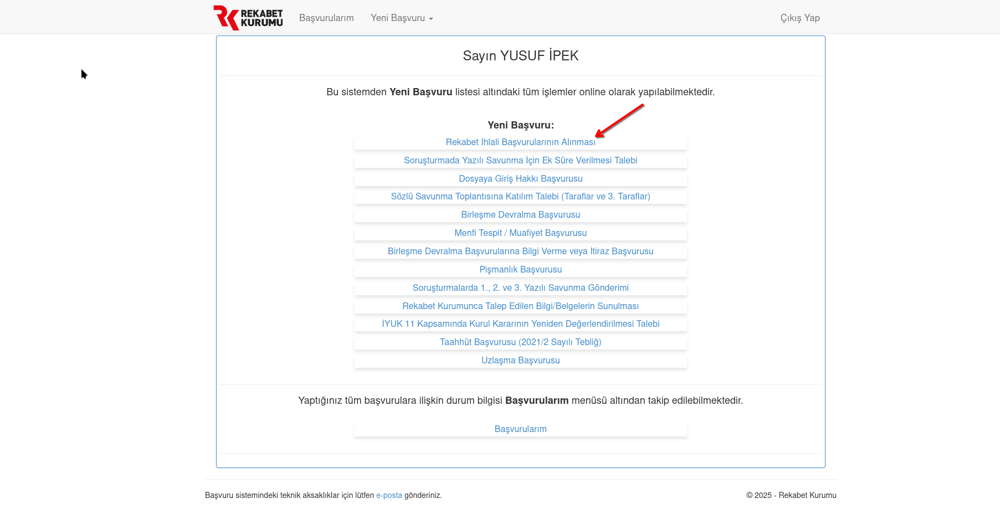
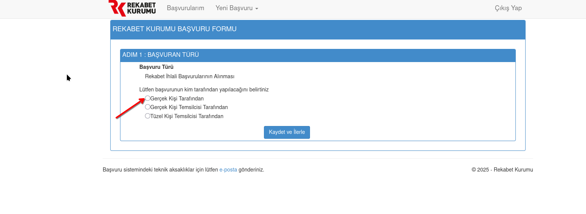
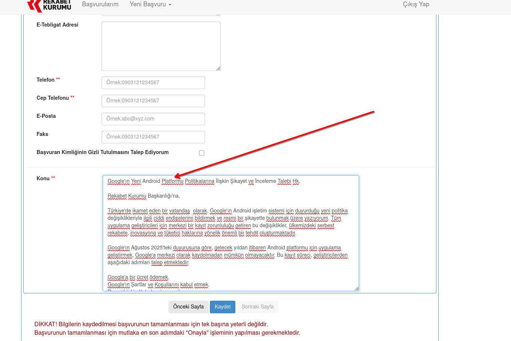
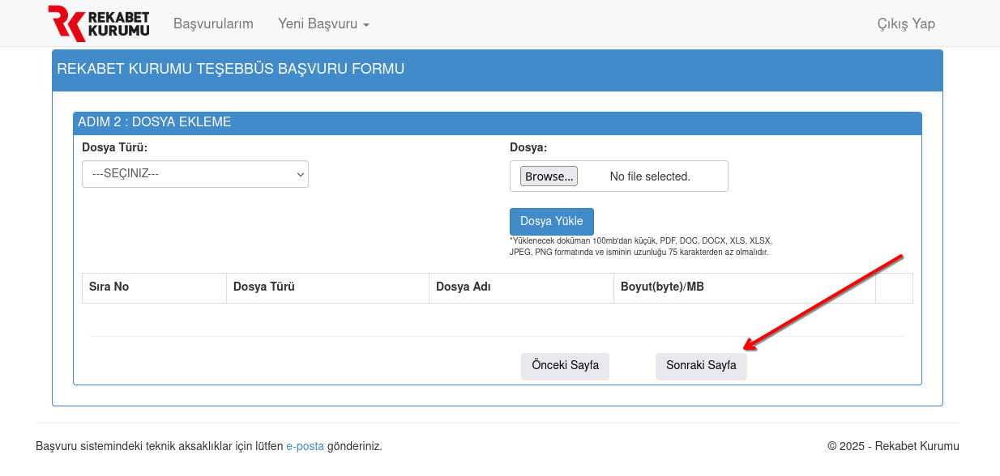
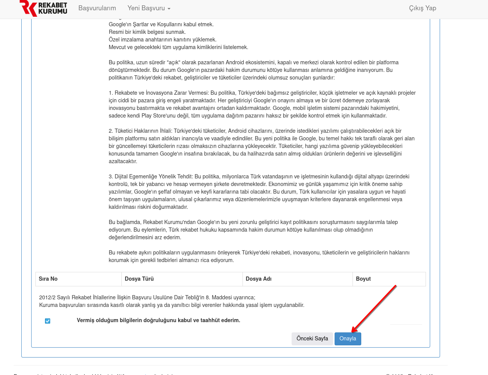

Rekabet Kurumu'na şikayet
e-Devlet ile giriyorsunuz, beş adımda bitiyor. Ücretsiz.
- e-Devlet şifreniz
- 5 dakika
- İsterseniz kimliğiniz gizli kalıyor
-
Başvuru sayfasına girin
e-Devlet ile giriş yapın ve "Rekabet İhlali Başvurularının Alınması"na tıklayın.
Başvuru sayfasını aç
-
"Gerçek Kişi Tarafından"ı seçin

-
Bilgilerinizi doldurun ve metni yapıştırın
Aşağıdaki metni "Konu" kutusuna yapıştırın, sonra Kaydet'e basın. İsterseniz "Başvuran Kimliğinin Gizli Tutulmasını Talep Ediyorum" kutusunu işaretleyin.

Köşeli parantezli satırı kendi örneğinizle değiştirin. Somut örnek içeren şikayet daha çok işe yarıyor.
Google'ın Android Geliştirici Doğrulama Programı hakkında şikayet
Rekabet Kurumu Başkanlığı'na,
Türkiye'de Android telefon kullanan bir tüketici olarak, Google'ın Android Geliştirici Doğrulama Programı (Android Developer Verification) hakkında şikayette bulunuyorum.
Google, 2027'den itibaren sertifikalı Android cihazlarda yalnızca kendisine kayıtlı geliştiricilerin uygulamalarının kurulabileceğini duyurdu. Kural 30 Eylül 2026'da Brezilya, Endonezya, Singapur ve Tayland'da yürürlüğe girdi. Kayıt için geliştiricinin Google'a ücret ödemesi, resmi kimlik belgesi vermesi, uygulamalarının paket adlarını ve imzalama anahtarlarını bildirmesi ve Google'ın şartlarını kabul etmesi gerekiyor.
Bu kural Türkiye'de uygulandığında:
1. Google Play dışındaki uygulama mağazaları ve geliştiriciler, Google'ın onayına bağlı kalacak. Google, rakibi olan dağıtım kanalları üzerinde denetim kurmuş olacak.
2. Kayıtsız bir uygulamayı kurmak isteyen kullanıcı geliştirici modunu açmak, cihazı yeniden başlatmak ve 24 saat beklemek zorunda kalacak. Bu adımlar alternatif mağazaları sıradan kullanıcı için fiilen kullanılamaz hale getiriyor.
3. Kimliğini Google'a vermek istemeyen ya da ücret ödeyemeyen bağımsız geliştiriciler ve F-Droid gibi açık kaynak projeler kullanıcıya ulaşamayacak.
[Kendi örneğiniz: Play dışından kullandığınız bir uygulamayı ve bu kuralın sizi nasıl etkileyeceğini bir iki cümleyle yazın.]
Kurulunuzun 8 Ocak 2026 tarihli ve 26-01/2-M sayılı kararıyla açılan soruşturmanın bu programı da kapsadığını biliyorum. Bu şikayetin soruşturma kapsamında değerlendirilmesini ve programın Türkiye'de uygulanmasının 4054 sayılı Kanun'un 6. maddesi açısından incelenmesini saygılarımla arz ederim.
-
"Sonraki Sayfa"ya geçin

-
"Onayla"ya basın
Kaydet tek başına yetmiyor, başvuru Onayla ile tamamlanıyor.



Tamam, şikayetiniz gitti. Kurum uygun başvurulara 30 gün içinde dönüş yapıyor.